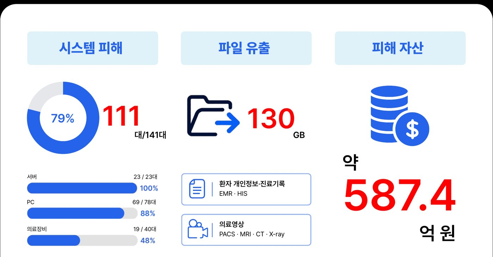

국내외 병원을 노린 랜섬웨어가 늘어나는 흐름에 맞춰, 의료기관 환경을 기반으로 침해사고를 재현하고 포렌식 분석까지 전 과정을 수행한 프로젝트입니다. 공격자는 다크웹에서 병원 정보를 사들인 뒤 스피어피싱과 웹서버 취약점으로 내부에 들어와 AD를 장악했고, 환자정보와 의료영상을 빼낸 다음 랜섬웨어를 배포했습니다.
팀은 이 시나리오를 직접 구현한 뒤, 분석관 역할을 나눠 시스템별로 증거를 수집·분석했습니다.
DMZ에 있는 Debian 기반 Postfix/Dovecot 메일서버(192.168.30.20)를 맡았습니다. FTK Imager로 디스크 이미지(raw 256GB)를 검증하고 Autopsy로 분석해, 웹서버에서 시작된 침투가 관리자 PC로 넘어가는 중간 연결고리를 증거로 확정했습니다.
시각(KST)
아티팩트
확인한 행위
ATT&CK
09-07 09:10
Postfix 로그 · .eml
공격자(192.168.90.100)가 '경영지원팀'을 사칭해 행정 PC로 보낸 1차 피싱 메일 수신 기록. 첨부 사전예약.exe, X-Mailer swaks
추가 분석: 메일서버에 남은 1차 피싱 메일 원문 (수신 IP 192.168.10.101, 첨부 사전예약.exe)
해석 공격자는 웹서버를 발판으로 메일서버에 들어와 실제 사내 메일 양식을 확보한 뒤, 정보보안팀을 사칭해 관리자 PC를 겨냥했습니다. 메일서버 증거가 '웹서버 → 메일서버 → 관리자 PC'로 이어지는 2차 침투 경로를 연결해 줍니다.
2. 의료장비망 X-ray 모달리티 구축
의료장비망(NET40)에 X-ray 모달리티 VM(Ubuntu, 192.168.40.11)을 만들고, Orthanc PACS(192.168.40.60)로 DICOM 영상이 전송되도록 연동했습니다. 시나리오 후반의 PACS 의료영상 유출이 실제 영상 데이터 위에서 일어나도록 만든 기반 작업입니다.
3. 증거물 무결성 기준값 산출
행정 PC, 웹서버, 메일서버 증거물의 수집 시점 SHA-256 해시를 certutil -hashfile과 sha256sum으로 산출해 기록했습니다(현장 기록 P-06). 이 값은 분석 시점에 FTK Imager로 다시 계산한 해시와 대조해 원본성을 입증하는 데 쓰였습니다.
4. 최종 발표자료 제작 · 발표
154장 분량의 최종 발표자료를 제작하고 발표를 맡았습니다. 포렌식이 남겨진 단서를 따라 사건의 전말을 밝힌다는 점이 영화의 서사와 닮았다는 데서 착안해 '영화 프레임'을 시각 콘셉트로 잡았습니다. 표지는 클래퍼보드, 슬라이드 테두리는 필름으로 꾸미고, 수사팀 롤플레잉과 담당자 인터뷰 장면을 넣어 사건 발생부터 흔적 발견, 분석, 추적까지를 하나의 이야기로 이어지게 구성했습니다.
10명이 나눠 분석한 시스템별 결과를 공통 양식(분석 대상 표시 바, 핵심 문장 콜아웃, 증거 캡처)으로 통일
시스템 구조도와 공격 경로를 단계별 애니메이션으로 보여 주어 흐름을 따라가기 쉽게 구성
발표 표지: 클래퍼보드 콘셉트분석 슬라이드 양식: 분석 대상 표시 바 · 증거 캡처 · 주석
분석 결과와 대응
IoC 기반 스크립트로 피해 범위를 산정한 결과 141대 중 111대(79%)가 피해를 입었고, 환자 개인정보·진료기록과 의료영상 약 130GB가 유출됐습니다.

IoC 기반 피해 산정 결과
메일서버 구간에 대해서는 다음 대응을 제안했습니다.
SSH root 로그인 차단, 키 기반 인증 전환, 로그인 실패 시 계정 잠금
메일 게이트웨이에서 실행파일(.exe) 첨부 차단
Postfix 3.4.13 → 3.9.0 업그레이드와 위장 발신 도메인 필터·스팸 차단 적용
IoC 등록: 위장 도메인 yourorg.ai, 사칭 주소 wellness@yourorg.ai · security@aif.org, 페이로드 sec_update.exe
회고
보안을 공부하면 당연히 방어자의 입장에서만 생각하게 됩니다. 이번 프로젝트에서는 공격자가 어떤 기법을 쓸지, 그렇게 숨긴 흔적을 또 어떻게 찾아낼지를 깊이 고민할 수 있어 새로웠고, 이것이 포렌식만의 매력이라는 생각이 들었습니다. 실제로 쓰이는 방법인지 팀원들과 많이 고민하고 멘토님 피드백을 받은 끝에, 디테일까지 현실적인 시나리오를 만들 수 있었습니다.
SK쉴더스 루키즈 과정에서 "보안 뉴스를 자주 찾아보라"는 이야기를 듣고 시작한 활동입니다. 기사를 읽고 지나가기만 하면 남는 게 적어서, 하루에 한 건씩 골라 6장짜리 카드뉴스로 요약하고 인스타그램에 기록하기로 했습니다. 기사에 나온 개념 중 모르는 것은 티스토리에 따로 공부해 정리했습니다.
Instagram
실제로 운영 중인 계정 화면입니다. 게시물을 누르면 함께 올린 캡션 원문과 인스타그램·티스토리 링크를 볼 수 있습니다.